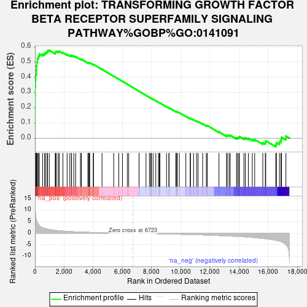
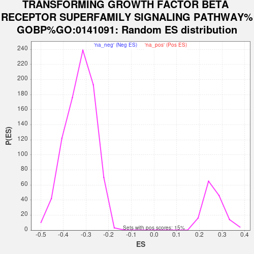

| Dataset | gene_ranks |
| Phenotype | NoPhenotypeAvailable |
| Upregulated in class | na_pos |
| GeneSet | TRANSFORMING GROWTH FACTOR BETA RECEPTOR SUPERFAMILY SIGNALING PATHWAY%GOBP%GO:0141091 |
| Enrichment Score (ES) | 0.5765136 |
| Normalized Enrichment Score (NES) | 2.1990387 |
| Nominal p-value | 0.0 |
| FDR q-value | 6.6322816E-4 |
| FWER p-Value | 0.008 |

| SYMBOL | RANK IN GENE LIST | RANK METRIC SCORE | RUNNING ES | CORE ENRICHMENT | |
|---|---|---|---|---|---|
| 1 | SMAD6 | 0 | 14.930 | 0.0770 | Yes |
| 2 | ID1 | 4 | 14.135 | 0.1497 | Yes |
| 3 | SMAD9 | 8 | 12.791 | 0.2154 | Yes |
| 4 | NOG | 9 | 12.570 | 0.2802 | Yes |
| 5 | BAMBI | 12 | 11.033 | 0.3370 | Yes |
| 6 | SMAD7 | 34 | 8.656 | 0.3804 | Yes |
| 7 | INHBB | 50 | 7.498 | 0.4182 | Yes |
| 8 | BMP7 | 102 | 5.718 | 0.4447 | Yes |
| 9 | ENG | 107 | 5.632 | 0.4735 | Yes |
| 10 | LTBP2 | 132 | 5.229 | 0.4991 | Yes |
| 11 | BMPR1A | 163 | 4.790 | 0.5221 | Yes |
| 12 | DLX5 | 230 | 3.926 | 0.5385 | Yes |
| 13 | WFIKKN2 | 298 | 3.429 | 0.5523 | Yes |
| 14 | NLK | 522 | 2.455 | 0.5522 | Yes |
| 15 | BMPR2 | 663 | 2.168 | 0.5553 | Yes |
| 16 | TGFBR1 | 715 | 2.095 | 0.5631 | Yes |
| 17 | TMEM119 | 833 | 1.902 | 0.5662 | Yes |
| 18 | RUNX2 | 852 | 1.876 | 0.5748 | Yes |
| 19 | GDF10 | 979 | 1.732 | 0.5765 | Yes |
| 20 | SMAD1 | 1397 | 1.331 | 0.5594 | No |
| 21 | MSTN | 1400 | 1.330 | 0.5661 | No |
| 22 | COL3A1 | 1457 | 1.282 | 0.5695 | No |
| 23 | LEFTY2 | 1589 | 1.195 | 0.5681 | No |
| 24 | SMAD3 | 1659 | 1.151 | 0.5701 | No |
| 25 | SRC | 1913 | 1.004 | 0.5607 | No |
| 26 | GDF9 | 2205 | 0.881 | 0.5485 | No |
| 27 | FERMT2 | 2391 | 0.807 | 0.5420 | No |
| 28 | TGFB3 | 2501 | 0.772 | 0.5397 | No |
| 29 | PPARG | 2509 | 0.769 | 0.5432 | No |
| 30 | CDKN2B | 2660 | 0.716 | 0.5383 | No |
| 31 | FOS | 2790 | 0.674 | 0.5343 | No |
| 32 | CLDN5 | 3120 | 0.585 | 0.5184 | No |
| 33 | USP9X | 3183 | 0.570 | 0.5178 | No |
| 34 | BMPR1B | 3627 | 0.469 | 0.4947 | No |
| 35 | FNTA | 3691 | 0.463 | 0.4934 | No |
| 36 | ACVR2A | 3720 | 0.457 | 0.4942 | No |
| 37 | DAB2 | 3757 | 0.452 | 0.4944 | No |
| 38 | SIRT1 | 3998 | 0.398 | 0.4827 | No |
| 39 | APPL2 | 4019 | 0.394 | 0.4835 | No |
| 40 | HIVEP1 | 4600 | 0.282 | 0.4516 | No |
| 41 | ACVR1 | 5402 | 0.161 | 0.4063 | No |
| 42 | USP15 | 5751 | 0.114 | 0.3868 | No |
| 43 | BMP2 | 6003 | 0.082 | 0.3728 | No |
| 44 | WFIKKN1 | 6339 | 0.041 | 0.3537 | No |
| 45 | SMAD4 | 6431 | 0.030 | 0.3486 | No |
| 46 | GDF11 | 7142 | -0.003 | 0.3078 | No |
| 47 | USP9Y | 7145 | -0.003 | 0.3077 | No |
| 48 | MAP3K7 | 7620 | -0.046 | 0.2806 | No |
| 49 | SKI | 7854 | -0.073 | 0.2676 | No |
| 50 | CITED2 | 7941 | -0.083 | 0.2631 | No |
| 51 | GCNT2 | 7966 | -0.086 | 0.2621 | No |
| 52 | PTK2 | 7981 | -0.088 | 0.2618 | No |
| 53 | DDX5 | 8104 | -0.102 | 0.2553 | No |
| 54 | TGFB2 | 8292 | -0.127 | 0.2451 | No |
| 55 | ACVR1C | 8475 | -0.149 | 0.2354 | No |
| 56 | ADAM9 | 8540 | -0.158 | 0.2326 | No |
| 57 | PDCD4 | 8575 | -0.163 | 0.2314 | No |
| 58 | ZMIZ1 | 9029 | -0.221 | 0.2065 | No |
| 59 | APPL1 | 9195 | -0.241 | 0.1982 | No |
| 60 | MEGF8 | 9199 | -0.241 | 0.1993 | No |
| 61 | STAT3 | 9665 | -0.310 | 0.1741 | No |
| 62 | CITED1 | 9697 | -0.315 | 0.1740 | No |
| 63 | ITGB5 | 9757 | -0.323 | 0.1722 | No |
| 64 | LPXN | 9763 | -0.323 | 0.1736 | No |
| 65 | ZFYVE9 | 9907 | -0.345 | 0.1672 | No |
| 66 | BMP8B | 10355 | -0.421 | 0.1436 | No |
| 67 | SMAD2 | 10652 | -0.477 | 0.1290 | No |
| 68 | CDH5 | 10671 | -0.480 | 0.1304 | No |
| 69 | ACVR2B | 10885 | -0.506 | 0.1208 | No |
| 70 | TGFBRAP1 | 11091 | -0.547 | 0.1118 | No |
| 71 | SMAD5 | 11192 | -0.566 | 0.1089 | No |
| 72 | BMP4 | 11508 | -0.624 | 0.0940 | No |
| 73 | ZYX | 11760 | -0.683 | 0.0831 | No |
| 74 | EID2 | 11824 | -0.699 | 0.0831 | No |
| 75 | SLC39A5 | 12629 | -0.901 | 0.0414 | No |
| 76 | RGMB | 13149 | -1.046 | 0.0169 | No |
| 77 | TSKU | 13193 | -1.066 | 0.0199 | No |
| 78 | SMURF1 | 13321 | -1.105 | 0.0183 | No |
| 79 | DUSP22 | 13399 | -1.128 | 0.0197 | No |
| 80 | ACVR1B | 13834 | -1.255 | 0.0012 | No |
| 81 | LTBP3 | 13912 | -1.279 | 0.0033 | No |
| 82 | BMP6 | 13999 | -1.313 | 0.0051 | No |
| 83 | PXN | 14030 | -1.326 | 0.0103 | No |
| 84 | TGFB1 | 14341 | -1.437 | -0.0002 | No |
| 85 | CHRD | 14439 | -1.481 | 0.0019 | No |
| 86 | MAPK3 | 14645 | -1.585 | -0.0018 | No |
| 87 | GDF15 | 14915 | -1.718 | -0.0084 | No |
| 88 | RGCC | 15079 | -1.811 | -0.0085 | No |
| 89 | ACVRL1 | 15637 | -2.159 | -0.0294 | No |
| 90 | ARRB2 | 15810 | -2.275 | -0.0276 | No |
| 91 | RGMA | 15839 | -2.292 | -0.0174 | No |
| 92 | FAM83G | 16523 | -2.976 | -0.0414 | No |
| 93 | AMHR2 | 16579 | -3.037 | -0.0289 | No |
| 94 | FURIN | 16780 | -3.353 | -0.0231 | No |
| 95 | TGFBR3 | 16887 | -3.558 | -0.0109 | No |
| 96 | JUN | 16919 | -3.631 | 0.0061 | No |
| 97 | PTPRK | 17224 | -4.865 | 0.0136 | No |
